Matched offline harness views at 1600×900. Production-selected trees, repository models and canopy geometry; approximate lighting and terrain shading. These are not Unity/HDRP captures. Candidate views include the proposed Ground integration patch. Handoff, exact log lines and build checklist · Measurements.
The distance labels are camera heights above the target at 45° pitch. At 2,500 m, the visible cut boundary is the exported 2 km crop. Click a view for full resolution.
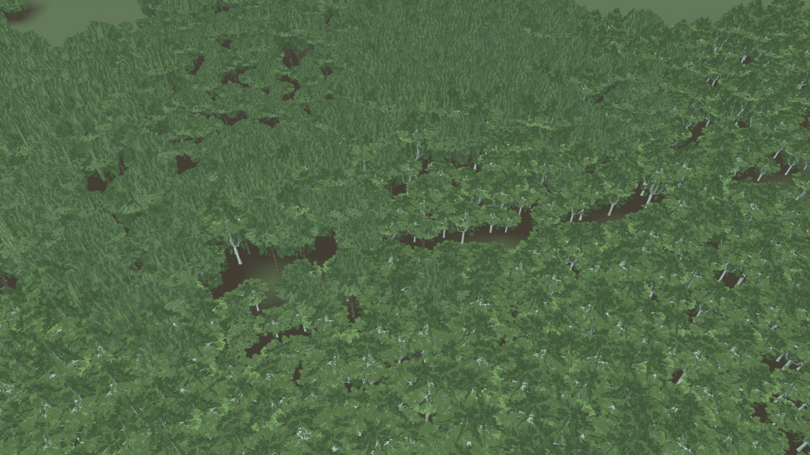
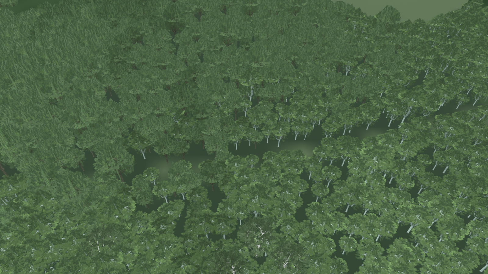
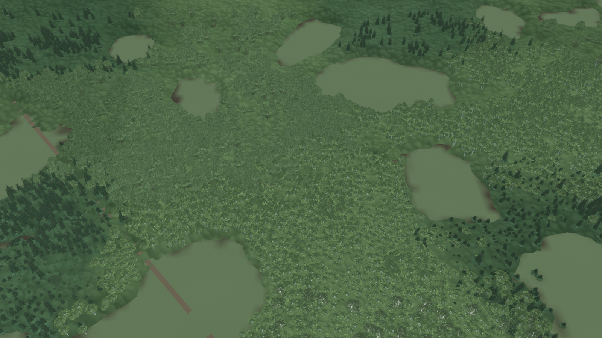
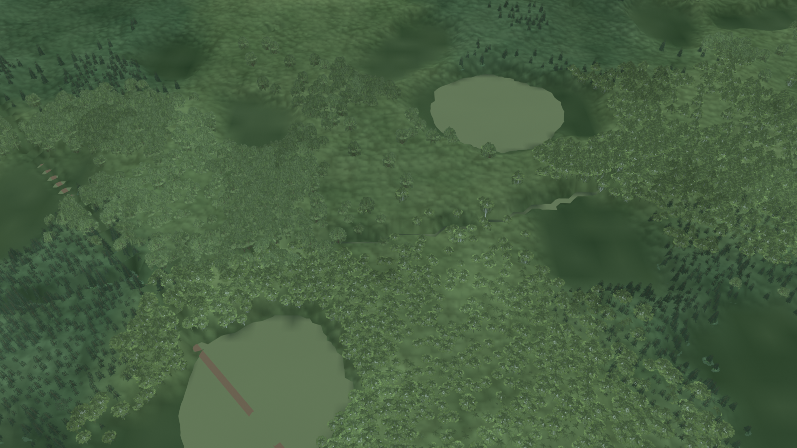
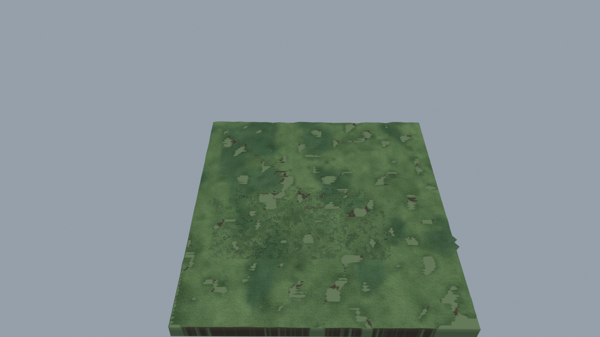
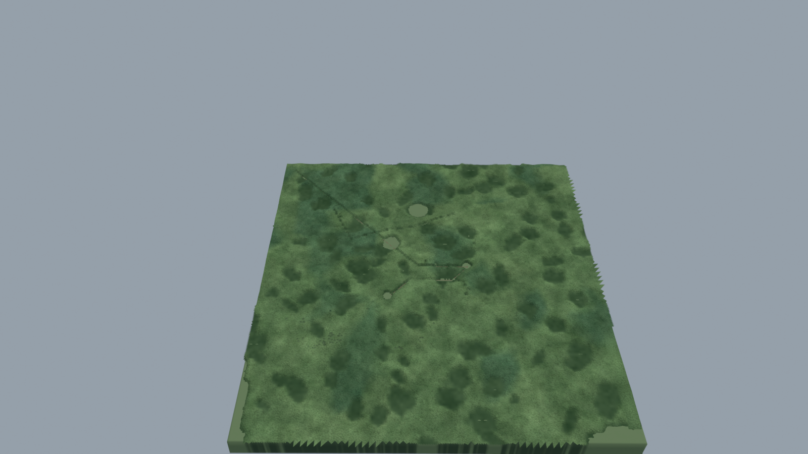
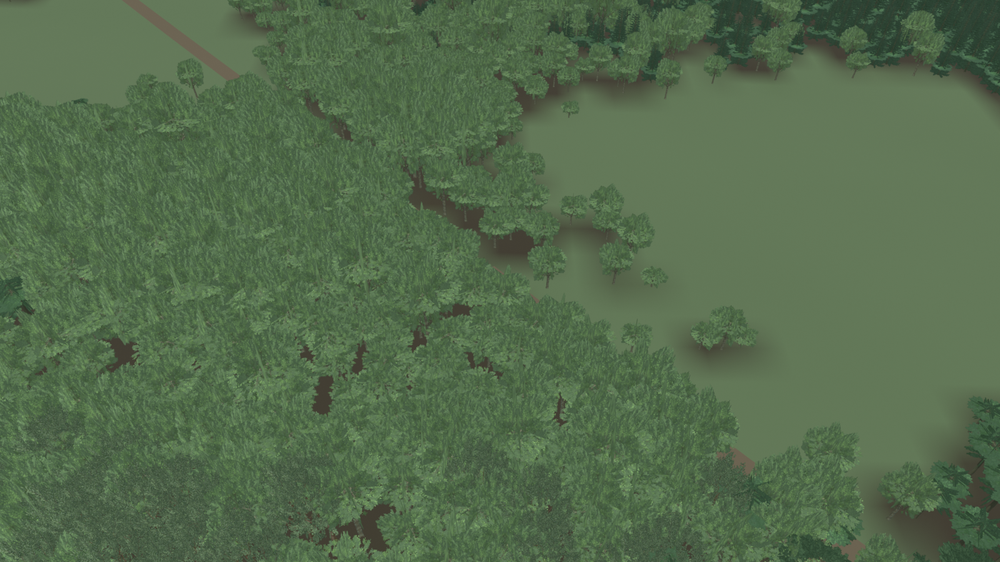
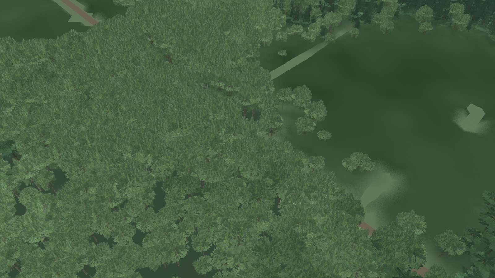
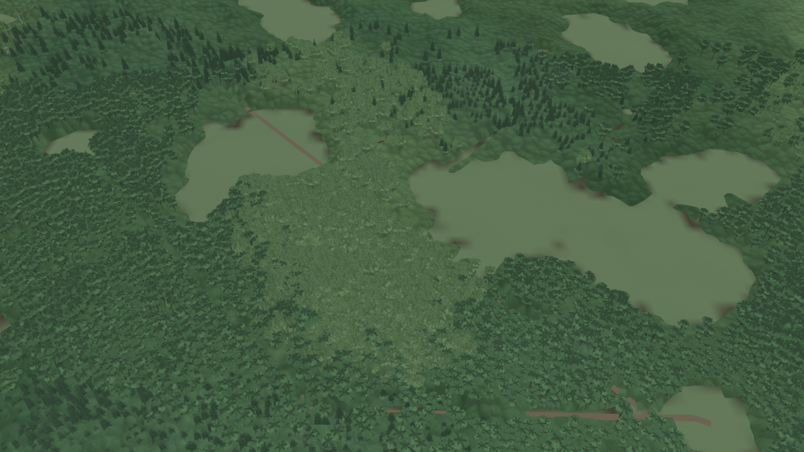
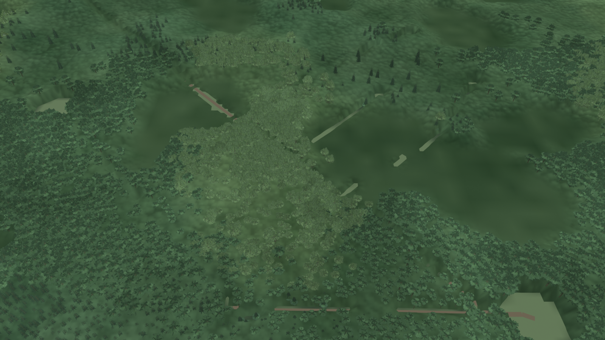
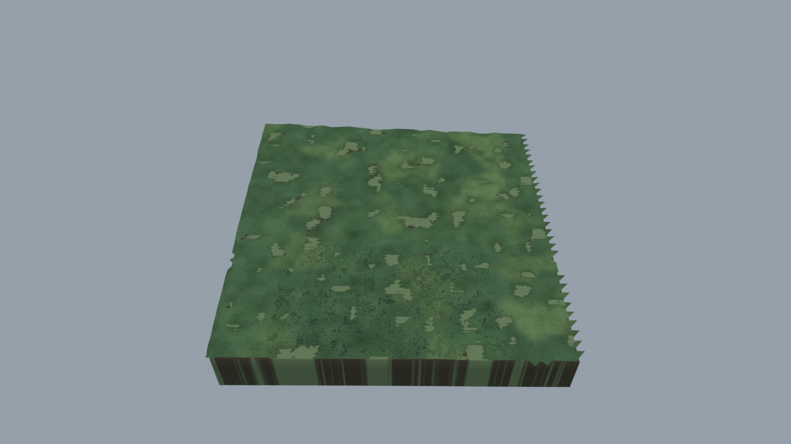
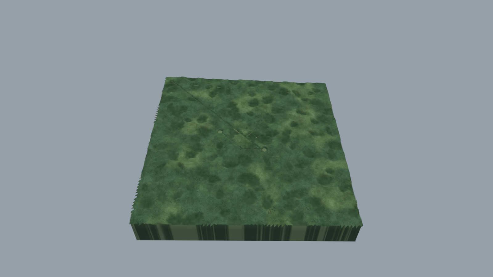
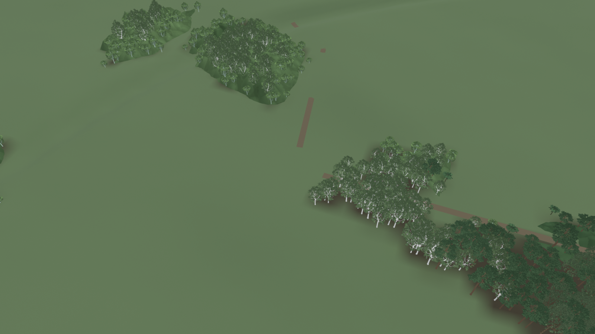
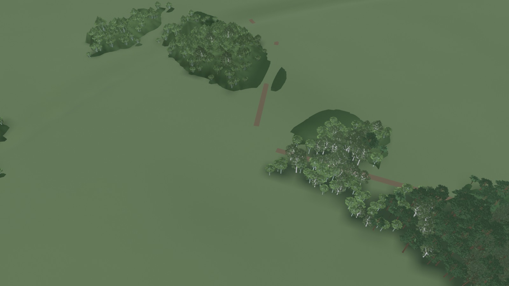
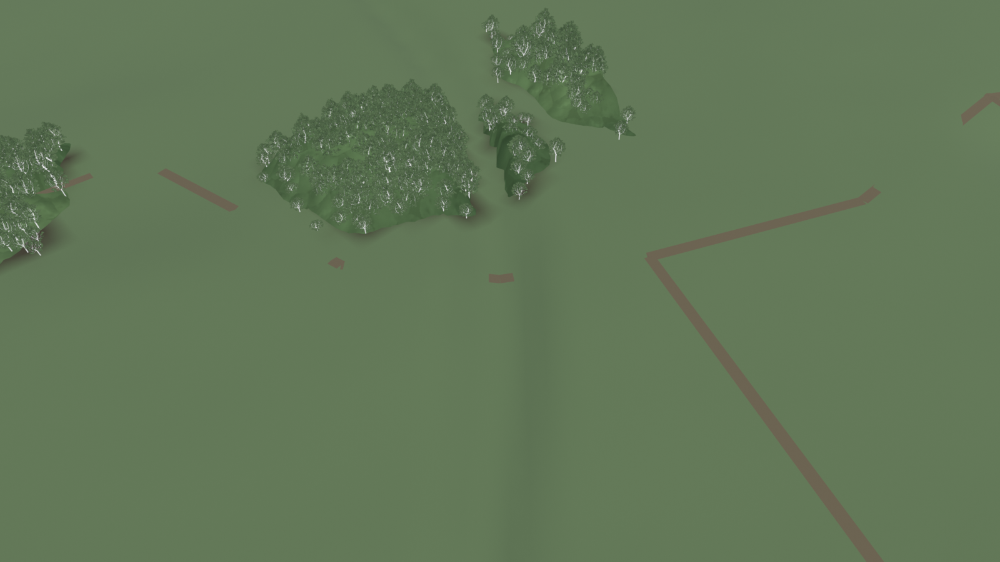
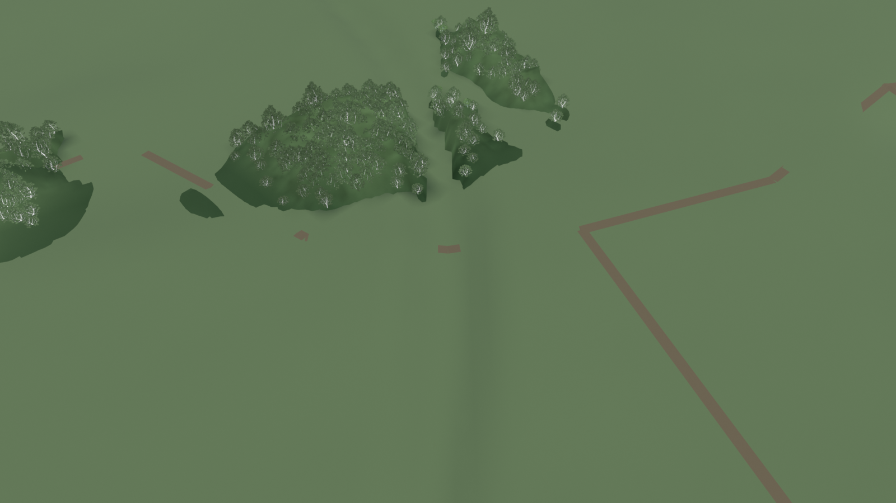
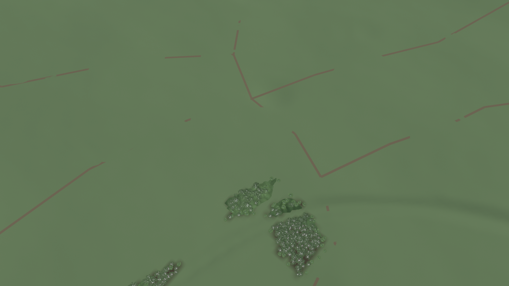
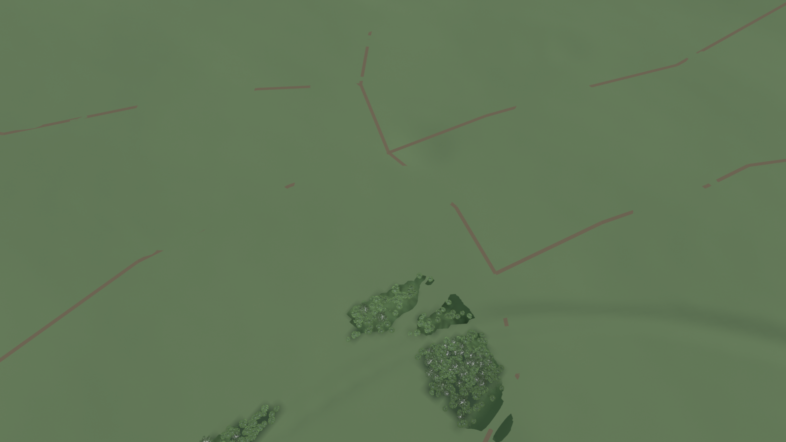